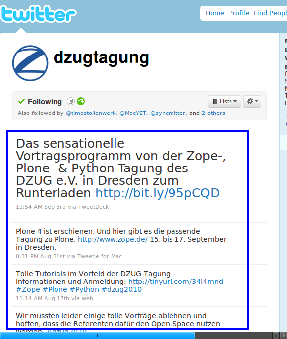
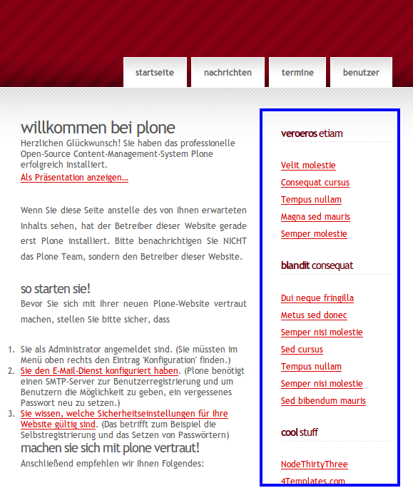

Website Theming mit Deliverance und XDV
15. bis 17. September 2010
Dresden
Johannes Raggam
BlueDynamics Alliance, Graz, Austria
http://bluedynamics.com/
Johannes Raggam
- Mitglied der BlueDynamics Alliance
- Web-Entwicklung seit 2002
- Plone Entwicklung seit 2005
- Deliverance User seit 2009
Beispiel
>
<replace content="#portal-globalnav" theme="children:#menu" />
<replace content="children:#content" theme="children:#columnA_2columns" />
Beispiel
<replace content="#portal-globalnav" theme="children:#menu" />
<replace content="children:#content" theme="children:#columnA_2columns" />
Beispiel
Content

Template

>
Beispiel
>
<replace href="http://twitter.com/dzugtagung"
content="#timeline" theme="children:#columnC_2columns" />
Beispiel
<replace href="http://twitter.com/dzugtagung"
content="#timeline" theme="children:#columnC_2columns" />
Das Problemfeld: Webdesign aktuell
- Webdesign ist essentiell
- Umfangreiches Wissen notwendig
- HTML, CSS, JS
- CMS Interna: Templatemechanismus, Konfiguration
- Deploymentprozess: SVN, GIT, ...
- Unterschiedliche Systeme - Unterschiedliche Techniken
- Plone, Django, Drupal, Wordpress, Joomla, ...
Das Problemfeld: Workflow
- Designteam: HTML Dummy Template
- Entwicklungsteam - Zusatzaufgaben
- Integration in Zielsystem
- Veröffentlichung
- Wasserfallmodell
- Spätere Nachbesserungen aufwändig
- Entwicklungsteam muss oft involviert werden
Was ist Deliverance?
- Theming Engine
- Von Paul Everitt, 2005
- Ursprünglich: XSLT Compiler
- Middlewaretool, Proxy
- Trennung Präsentation - Inhalt - Logik
- HTML Transformationen
- Mapping von Elementen Content → Template
- Einfache Transformationsregeln
- Regeln + Content + Template → neues Dokument
- Wichtig:
- Valides (X)HTML
- Eindeutig selektierbare Elemente (CSS3, XPath)